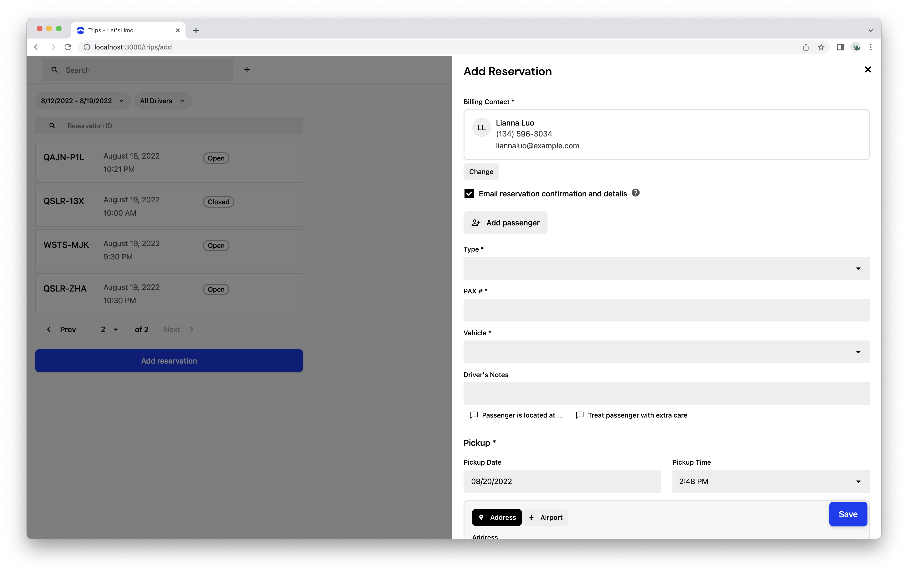
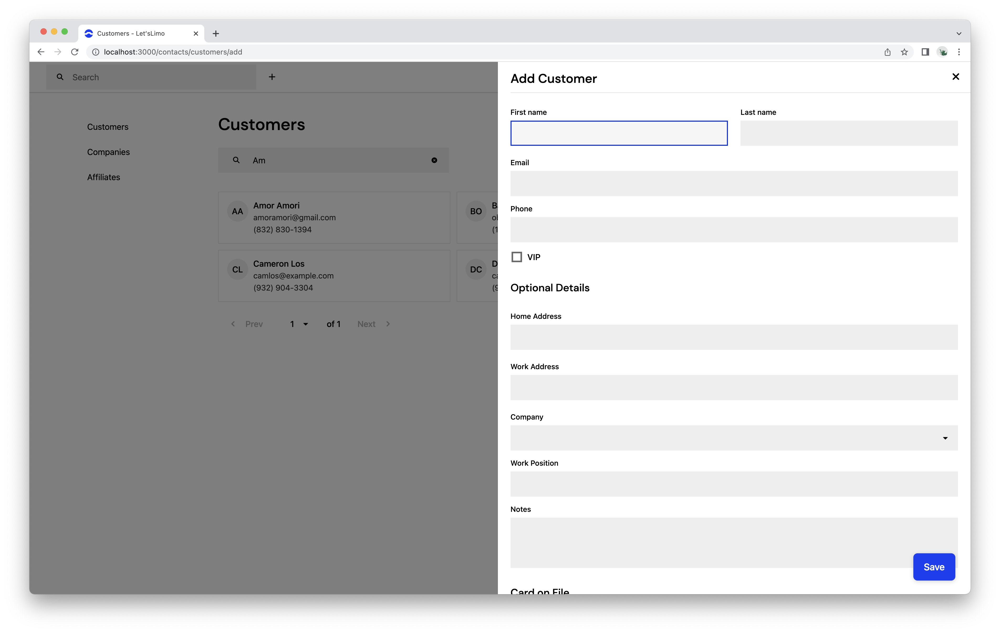
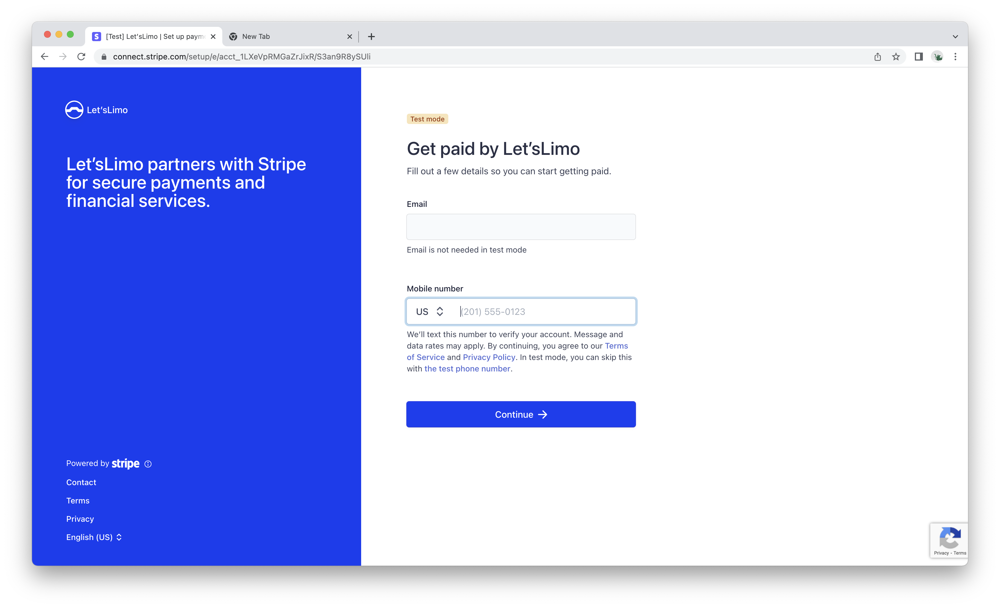

Let's Limo
The summer of 2022, I embarked on building Let’s Limo. The idea stemmed from seeing my dad, who entered the industry as a driver and later saved up to buy his own vehicles and employ a driver of his own, frustrated using outdated and complex software to handle trip scheduling and invoicing. This led me to think of what could be done to simplify an unenjoyable and time-consuming experience to one that is both enjoyable, fast, and user friendly.

While although I am still finishing up some functionality for a solid MVP, I’m happy to share the progress. Progress has come along well, and I'm thrilled with what I’ve learned so far.
Let’s Limo features booking/reservation creation. Here, an operator can create and dispatch a trip to a driver in a minute or less.
After a trip is created, an operator can view the details and assign a driver, and change the vehicle or notes. Operators can also create a return trip for a trip, and add additional trips. Adding additional trips may come in useful for multiple trips with a single billing contact.
About customers, an operator can save them in the Contacts tab. These contacts are then a single source of all an operator’s clientele, where they’re able to add a card on file and book trips.
Payments are handled with Stripe. In the operator’s dashboard, they can connect with Stripe to charge customers directly. More specifically I’ve used Stripe Connect, one of their solutions to enable multi-party payments.
That’s more to come. When it’s ready, it’ll be live on letslimo.com